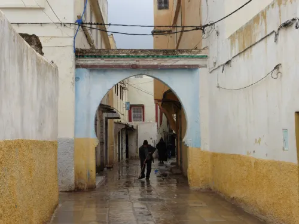

Présentation
Une porte de l'ancienne Taza
Bab Errih fait partie des repères patrimoniaux associés à l'ancienne médina de Taza. Son nom, son emplacement et son architecture rappellent le rôle des portes dans l'organisation historique de la ville.
Patrimoine historique
Une porte historique liée à l'ancienne ville de Taza, témoin de son patrimoine architectural et de sa mémoire urbaine.

Présentation
Bab Errih fait partie des repères patrimoniaux associés à l'ancienne médina de Taza. Son nom, son emplacement et son architecture rappellent le rôle des portes dans l'organisation historique de la ville.
Importance historique
Les portes anciennes de Taza témoignent de l'importance stratégique et culturelle de la ville. Bab Errih reflète cette histoire à travers son lien avec les remparts, les passages et la vie de la médina.
Conseils pour les visiteurs
Prévoyez une visite à pied, prenez le temps d'observer les détails architecturaux et respectez la tranquillité des quartiers voisins. La lumière du matin ou de fin d'après-midi est idéale pour les photos.
Localisation
Bab Errih se situe dans le secteur historique de Taza, à proximité des parcours de découverte de l'ancienne médina et des autres repères patrimoniaux de la ville.